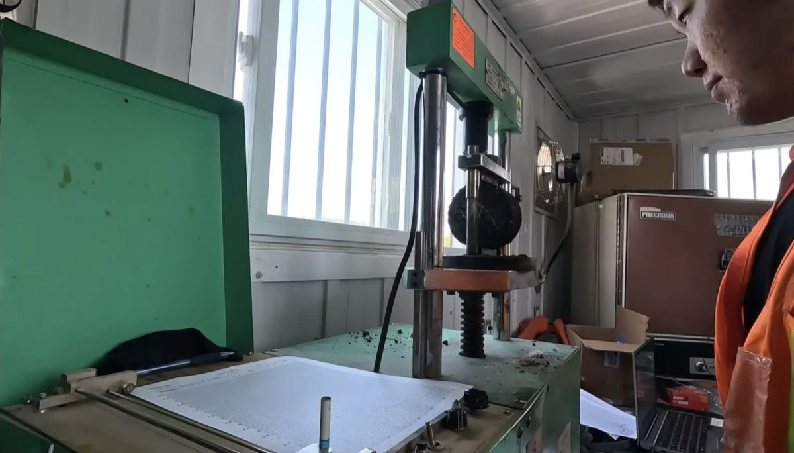

01 / Context
One case study, two sides of pavement delivery
This work joined geometric design support with construction quality control. In the office, the problem was fitting safer and more buildable highway geometry into real corridor constraints. In the field and laboratory, the problem was checking whether asphalt materials and placement matched the governing procedures and specifications.
The design and QC assignments occurred across Northern Ontario highway work, including field experience on Highways 17 and 61.
02 / My role
Design support, sampling, testing, and records
I contributed Civil 3D grading and alignment work for two highway redesigns, then carried out field and laboratory QC tasks under the project’s testing procedures. That combination made the relationship between design decisions, construction sequencing, density, and asphalt behaviour much more concrete.
Responsibility boundary: I supported the design team and performed assigned QC work; final highway design approval and material acceptance remained with the responsible professionals and owner.
03 / What I did
Moved between corridor geometry and material checks
- Supported grading, alignments, turning lanes, intersection geometry, and roadside design in Civil 3D for two highway redesigns.
- Worked with Superpave and CIREAM asphalt procedures, including controlled specimen preparation and curing requirements.
- Performed assigned field checks and density measurements, recording conditions and results against the applicable project procedure.
- Supported laboratory evaluation using Marshall-style equipment and specified AASHTO/ASTM methods, including moisture-susceptibility and strength-related checks where required.
- Organized test observations and calculations so results could be reviewed against OPSS and project criteria.
04 / Field to laboratory
Following the material through the process
One sample links field placement, controlled preparation, and a reviewable laboratory result.

05 / Approach
Use a repeatable chain of custody
- Start with the governing procedure. Identify the mix, sampling location, test method, acceptance criterion, equipment, and timing before collecting data.
- Control the setup. Record specimen preparation, cure time, equipment state, field conditions, and any departure from the intended method.
- Check before interpreting. Review units, calculations, outliers, and supporting observations before comparing a result with the specification.
- Report with context. Connect the number back to its lift, location, sample, and procedure so another reviewer can reproduce the reasoning.
06 / Outcome
A field-informed design perspective
The combined assignment strengthened my ability to see pavement as both a designed system and a manufactured material. It produced reviewable design and QC records while teaching me to separate an observation, a test result, and an acceptance decision.
No unverified production, cost, or acceptance metric is presented. The value of the case study is the documented scope and the connection between design intent and field evidence.